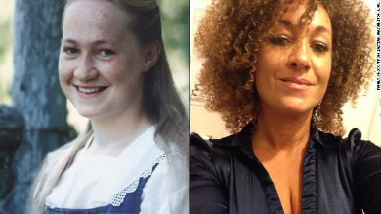

< < < Back
NAACP President Rachel Dolezal Outed As White Woman – Return Of Kings
Some days, I crawl out of bed and wonder if I’m still living in reality. Reading the news makes me wonder if I’m not lying half-dead in a hospital like in Jacob’s Ladder and the whole world around me isn’t some twisted hallucination. For example, learning that Spokane NAACP President Rachel Dolezal is actually a white woman who’s been pretending to be black makes me want to pinch myself so I can wake up from this nightmare:
A recent investigation into racially charged threats made toward the president of the NAACP chapter in Spokane have raised questions beyond who made the threats.
On Thursday, the chapter president’s parents claimed she had been deceiving people.
Ruthanne and Larry Dolezal said Thursday that they want people to know the truth, including that their daughter Rachel Dolezal is Caucasian. The Dolezals said their daughter is specifically German and Czech.
Ruthanne and Larry Dolezal said their daughter has always identified with the African-American culture and had black siblings who were adopted. They said she went to school in Mississippi and was part of a primarily African-American community.
Dolezal apparently achieved her reverse-Michael Jackson appearance through Snooki-esque tanning techniques and a really good hairdresser. After evading press scrutiny for several days, Dolezal came out defiantly attacking her critics:
Rachel Dolezal, the white NAACP leader who misrepresented herself as black for years, was pictured for the first time since the scandal surrounding her race erupted as she left her home on Friday.
She also gave an interview about the controversy, saying of her detractors; “I don’t give two shi*s what you guys think.” You are so far done, and out, of my life’
When pressed further about her race, she told KREM; ‘I actually don’t like the term African-American. I prefer black, and I would say that if I was asked I would definitely say that yes I do consider myself to be black.’
In addition to her status as Spokane NAACP president, Dolezal also teaches Africana Studies at Eastern Washington University and has falsely claimed to have been the victim of “hate crimes” in the past.
A year ago, I wrote a satirical article about “transracialism” with the intent of making fun of transsexuals, but even then, I had no idea that “transracialism” would actually become a thing. While there’s been a small movement of soi-disant “transniggers” on Tumblr, that well-known repository of mental illness and special snowflaking, Rachel Dolezal is the first example of this phenomenon in the real world.
How Transsexuality Paved The Way For Rachel Dolezal

The revelation of Dolezal’s true racial heritage has triggered a flurry of condemnations from left-wing thought organs such as Salon, the same ones that have normalized transsexuality and a host of other mental disorders. What they don’t realize is that by their own logic, the left has no right to criticize Dolezal for lying about being black.
For decades now, leftists have argued that race and gender are social constructs with no biological basis. This ludicrous line of reasoning allows the left to deny basic, observable physical differences between men and women (such as physical strength) as well as scientific data showing cognitive and behavioral differences between different ethnic groups. It has also been used to justify transsexuality: since there’s no biological basis for gender, a man who takes estrogen and gets his rocket flayed into a pocket is just as female as women who were born that way.
By this logic, on what basis can the left condemn Rachel Dolezal? If race is a social construct, then it doesn’t matter that Dolezal is a homely white girl from Montana; if she feels black on the inside, she is perfectly justified in changing her appearance and acting black. If we’re supposed to celebrate Bruce Jenner for embracing his “true” femininity through surgery and hormones, then we should also celebrate Dolezal for embracing her “true” race.
The Myth Of White Privilege
Rachel Dolezal’s decade-long deception also explodes a popular left-wing myth: the idea of “white privilege.”
According to leftists, American society is deeply racist, advantaging whites over all other races. Yet despite being white, Dolezal chose to reinvent herself as black, a member of a race that is supposedly discriminated against at all levels of society. If white privilege actually existed, Dolezal would never have chosen to deliberately cripple herself by pretending to be a member of an oppressed class.
The truth of “white privilege” is that it not only doesn’t exist, but the reality is the opposite: American society is afflicted with “black privilege,” “minority privilege,” and “female privilege.” As an ordinary white girl, Rachel Dolezal would have never gone anywhere in life. By reinventing herself as black, she not only secured a job teaching at a major university, but she became the president of the local chapter of a powerful political organization.
It remains to be seen whether Dolezal’s exposure will lead to any serious repercussions for her or any changes in the downward trajectory of American culture. All I know is that from here on out, the world is just going to get even more absurd.
Read More: Why Modern Feminism Is White Woman’s Privilege